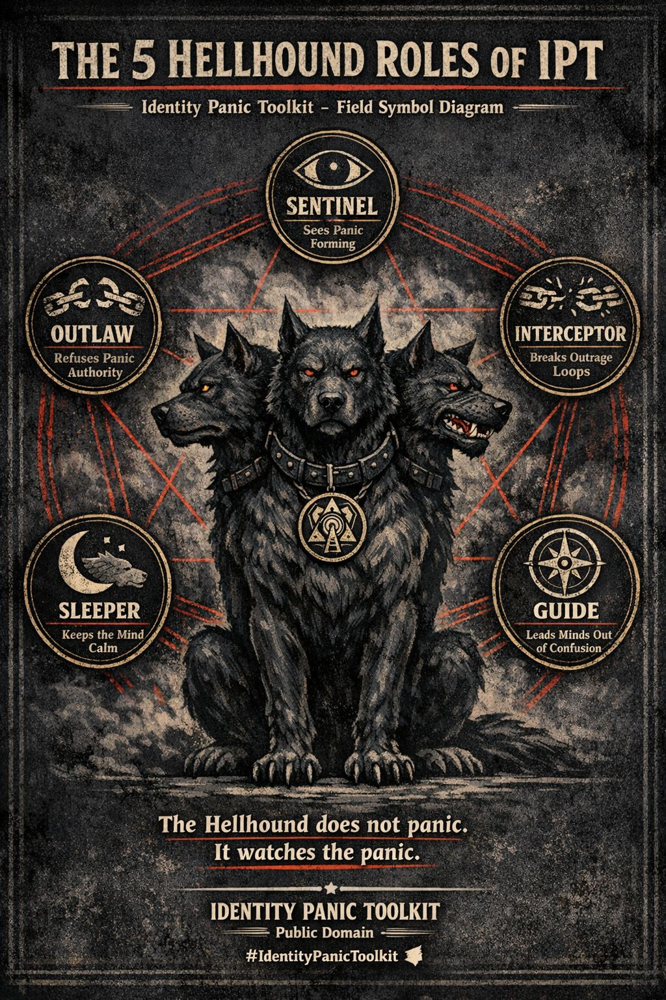

The Interceptor
Breaker of Outrage Loops
The Interceptor steps between people and the panic machine.
It interrupts:
- outrage amplification
- panic headlines
- manipulative fear narratives
- emotional escalation cycles
Instead of feeding the reaction loop, the Interceptor slows the situation. The moment of pause breaks the chain reaction.
Hellhound FunctionInterrupt panic before it multiplies.
03
The Guide
Navigator of Confusion
When someone realizes they are caught in identity panic, the first experience is often disorientation. The Guide walks beside them.
The Guide helps people:
- recognize panic patterns
- understand emotional triggers
- step outside ideological traps
- regain independent perception
No one exits panic instantly. Guidance restores orientation.
Hellhound FunctionHelp others find the path out.
04
The Outlaw
Defender Against False Authority
Some panic systems are sustained deliberately. Outrage can be profitable. Fear can be mobilized. The Outlaw refuses to obey these systems.
It challenges:
- outrage profiteering
- identity manipulation
- narrative intimidation
- pressure to conform through fear
The Outlaw protects independent thought.
Hellhound FunctionResist panic systems that demand obedience.
05
The Sleeper
Keeper of Psychological Calm
The final role of the Hellhound is rest. A stable mind does not chase every alarm.
The Sleeper represents:
- emotional regulation
- psychological distance
- calm observation
- the ability to disengage from manufactured panic
The Sleeper reminds us that not every signal deserves our nervous system.
Hellhound FunctionPreserve calm once the panic has passed.
Final Note
The Hellhound is not a weapon. It is a guardian symbol representing the ability to see panic clearly without surrendering to it.
In the presence of the Hellhound, the outrage machine loses its power. Calm returns.